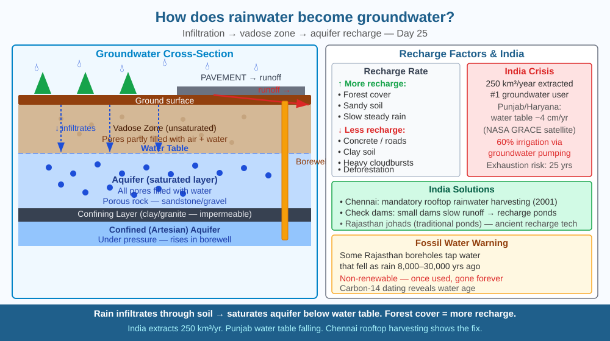

By the end of this lesson, you should be able to explain the infiltration process, describe what an aquifer is, and predict what happens to groundwater recharge when forests are cleared.
India's groundwater feeds 85 % of rural drinking water and 60 % of irrigation. Yet levels are falling in Punjab, Haryana, and parts of Rajasthan. Farmers drill deeper every year. But it rains every monsoon — so where is the water going, and why isn't it replenishing underground reserves?
Infiltration: When rain falls on permeable surfaces (soil, loose gravel), water soaks in. It percolates downward through the vadose zone (unsaturated soil) under gravity, filling pore spaces between soil and rock particles.
Aquifer: A layer of porous, permeable rock or sediment (sandstone, gravel, limestone) that holds groundwater and allows it to flow. Think of it as a giant underground sponge.
Water table: The upper surface of the zone of saturation — where all pores are full of water. Dig or drill down to the water table and water fills the hole (a well).
Confining layers: Impermeable rock (clay, granite) stops water from percolating further. Water trapped below a confining layer is in a confined (artesian) aquifer — it is under pressure and can rise up in a drilled borewell without pumping.
What affects recharge rate: - Surface cover: forests slow runoff, promote infiltration; concrete and roads are impermeable — water runs off into drains rather than into the ground - Soil type: sandy soils allow rapid infiltration; clay soils have tiny pores, slow flow - Rainfall intensity: slow, steady rain infiltrates more than a cloudburst (surface runoff increases with rate) - Evapotranspiration: trees take water from soil and release it to atmosphere
Where does runoff water go? → streams → rivers → sea. Water that runs off does NOT recharge groundwater. Dense tree cover breaks rainfall, slows runoff, allows soil to absorb water → more recharge.
Think of the ground as a multi-layered coffee filter sitting above a glass jar (the aquifer).
Step through the process: 1. Rain falls — it hits the surface. If the surface is soil or leaf litter, it soaks in. If it is concrete, it bounces off and flows away. 2. Vadose zone (the filter) — water moves downward through unsaturated soil. Gravity pulls it, but small pores slow it. Sandy soil is a coarse filter — fast. Clay is a fine filter — slow. Roots here take some water for the plant. 3. Water table — the level at which all pores are saturated. Below this line everything is wet. In a well, the water surface sits at the water table. 4. Aquifer (the jar) — porous rock holds water in its gaps the way a sponge holds water. Pump a borewell and you are drawing from this store. The store only refills when step 1 and 2 happen enough and fast enough. 5. Confining layer — if an impermeable layer (granite, dense clay) sits below the aquifer, the water is trapped under pressure. Drill through the confining layer and water pushes up on its own — an artesian well.
The critical insight: the refill rate (recharge) depends entirely on step 1 and 2. Cover the surface with concrete, remove trees, or compact soil with machinery, and the filter clogs. The jar empties faster than it fills.
The SVG shows a vertical cross-section of land and underground layers. At the surface, three zones are labeled left to right: "Forest (permeable)" with green tree symbols and downward blue arrows showing infiltration; "Farmland (partially permeable)" with crop symbols and mixed arrows; "City (impermeable)" with building symbols and horizontal arrows showing runoff into a stormwater drain. Below the surface, three horizontal bands are labeled: "Vadose zone (unsaturated soil)" in light brown with small pore gaps; "Water table" as a dashed blue line; "Aquifer (saturated gravel)" in blue-grey with water droplets filling pore spaces. Below the aquifer, a dark band labeled "Confining layer (granite)" has no pores. A borewell is shown piercing all layers, with a pump at the surface. An upward red arrow from the aquifer labeled "Extraction" is visibly wider than the downward blue arrows labeled "Recharge," illustrating over-extraction.

India is the world's largest user of groundwater (about 250 km³/year). Punjab and Haryana produce 50 % of India's wheat and rice — both water-intensive crops — by pumping groundwater faster than it recharges. NASA satellite data (GRACE mission) showed that groundwater in northwest India fell at 4 cm/year between 2002–2008. At this rate, some aquifers could be exhausted within 25 years. Tamil Nadu, Rajasthan, and Karnataka have implemented rainwater harvesting — diverting rooftop and surface water into artificial recharge wells, percolation ponds, and check dams — to actively replenish aquifers. Chennai made rooftop rainwater harvesting legally mandatory for all buildings (2001), dramatically improving water table levels.
Infiltration comparison: Prepare two identical jars. Fill one with dry sand and one with dry clay soil (or compacted garden soil). Pour the same amount of water into each simultaneously. Observe: in the sand jar, water percolates quickly; in the clay jar, water pools on top and is absorbed slowly. This directly demonstrates why sandy soils recharge aquifers faster than clay soils, and why clay-rich areas flood more easily.
Now add a third comparison: place a handful of dry leaves and twigs on top of one of the jars before pouring. Does the leaf litter speed up or slow down infiltration? Explain your observation using what you know about how forest cover affects the water cycle. (Hint: leaf litter breaks the force of falling water droplets, preventing the surface soil from being compacted.)
Fossil aquifers (like the Great Artesian Basin in Australia or parts of the Thar Desert in India) contain water that fell as rain thousands to millions of years ago when the climate was wetter. Carbon-14 dating of groundwater can reveal its age. Once extracted, this water cannot be recharged on human timescales — it is a non-renewable resource like oil. India's deep bore wells in some parts of Rajasthan tap water that is 8,000–30,000 years old. When it is gone, it is gone.
Predict: A district in Rajasthan has 10,000 farmers each operating a borewell that extracts 0.5 litres/second for six hours per day during the four-month growing season. The district receives 300 mm of rain per year over 500 km² of mostly clay soil, with an estimated infiltration rate of 15 %. Calculate the approximate annual extraction volume and the approximate annual recharge volume. Is the aquifer in surplus or deficit? At the current rate of deficit (if any), estimate how many years before the water table drops by 10 metres, assuming the aquifer has 20 metres of saturated thickness across 500 km².
How does rainwater become groundwater stored underground?
Correct answer: B
Why is understanding the infiltration mechanism more useful than knowing groundwater exists?
Correct answer: B
If forests covering a hillside were cleared, what would you predict about groundwater recharge?
Correct answer: C
A city of 500,000 people is planning two alternative futures for a 200-hectare vacant plot on its outskirts. Option A: pave it as a logistics park (impermeable surface, fast runoff). Option B: develop it as an urban forest and percolation park (permeable surface, slow runoff, recharge wells).
The area receives 900 mm of rain per year. Research suggests that paved surfaces shed 85 % of rainfall as runoff, while forested surfaces with recharge infrastructure can convert 60 % into infiltration. The city's aquifer currently has a 15 % annual deficit between extraction and recharge.
Calculate the difference in annual groundwater recharge (in cubic metres) between Options A and B. Then estimate how many years it would take Option B to eliminate the city's annual deficit if the deficit volume is 8 million cubic metres per year and the forested park contributes the recharge you calculated. Identify one practical limitation of your estimate that would make the real number different from the calculated one.
Trees do not just help water get into the ground — they actively pull it up and pump it back into the atmosphere. A single large banyan tree can transpire 400 litres of water per day. A forest of 10,000 trees releases roughly 4 million litres of water vapour per day, creating local humidity that triggers rain over the very land where the trees grew. This means that deforesting an area does not just reduce infiltration — it can also reduce the rainfall that falls there in the first place. Ecologists call this "biotic pump" theory: forests manufacture their own rain, and clearing them can permanently shift a region to a drier climate, even if global rainfall patterns are unchanged.
Rainwater becomes groundwater only when it infiltrates through permeable soil into an aquifer — a process that depends on surface cover, soil type, and rainfall intensity, and that can be permanently damaged by deforestation and urbanisation.